Education · Academy website FeaturedLive
Infinity Learning Academy
A learning academy website presenting education programmes and online access for prospective students.
Academy website · Independent design and development
A visual archive across education, commerce, creative, corporate, industrial, and campaign work — including live and honestly preserved archived projects.
A learning academy website presenting education programmes and online access for prospective students.
Academy website · Independent design and development

A creative agency website presenting branding, content, campaign, production, and digital services.
Agency website · Independent design and development

A luxury jewellery storefront offering catalogue-led browsing across gold and jewellery collections.
Jewellery storefront

A custom business website delivered from scratch with a responsive frontend.
Business website · Frontend development
A forex education website with learning paths, market insights, trading signals, and mentorship information.
Academy website · Independent design and development
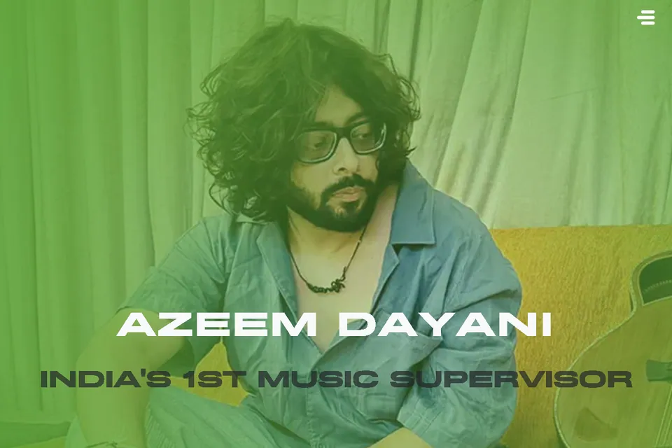
A professional portfolio presenting the work, achievements, and film credits of music supervisor Azeem Dayani.
Professional portfolio
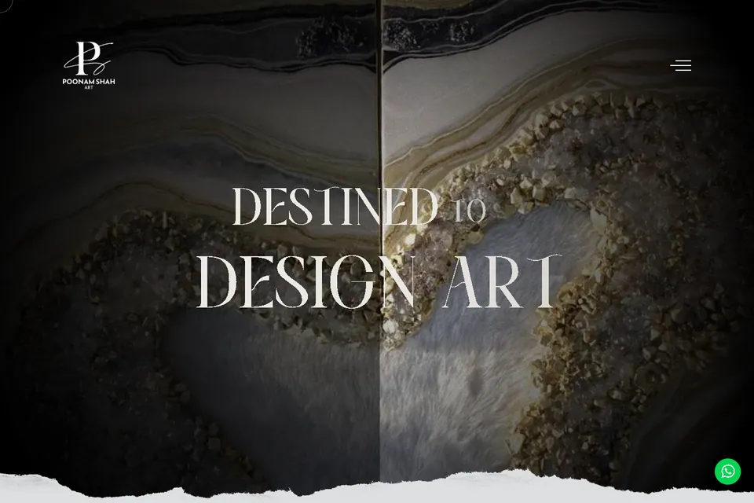
An artist portfolio presenting Poonam Shah's artwork and creative practice online.
Artist portfolio
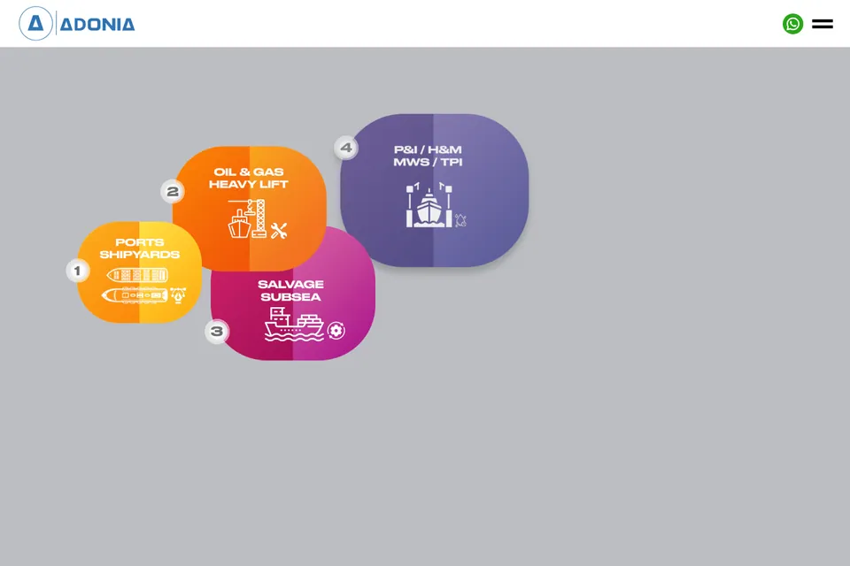
A corporate website presenting offshore, maritime, logistics, and related business services.
Corporate website
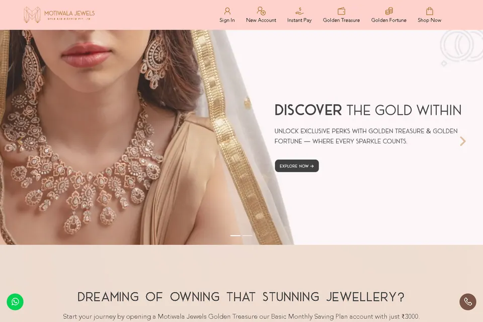
A jewellery storefront focused on browsing luxury jewellery and gold collections online.
Jewellery storefront
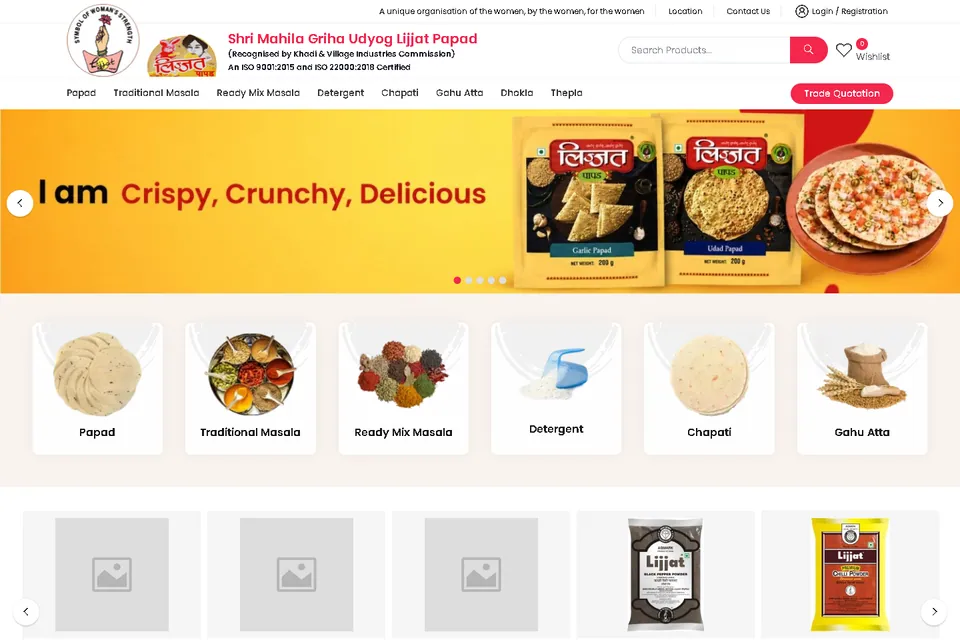
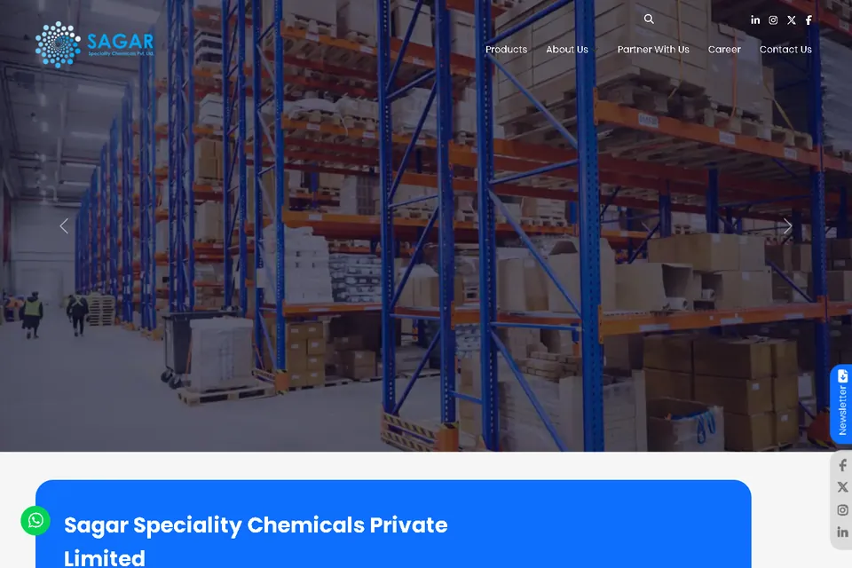
An industrial business website presenting speciality chemical products and company information.
Industrial website
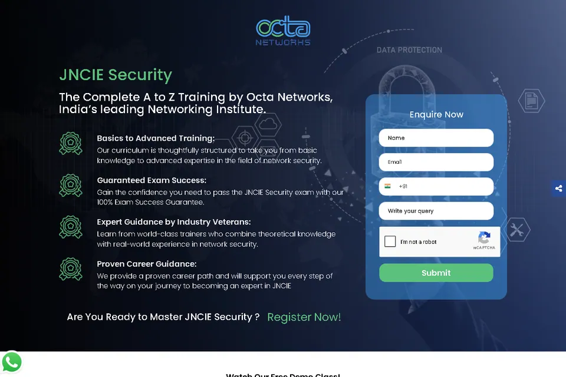
A focused training landing page for Octa Networks' CCIE Security v6.1 programme.
Training landing page · Independent design and development
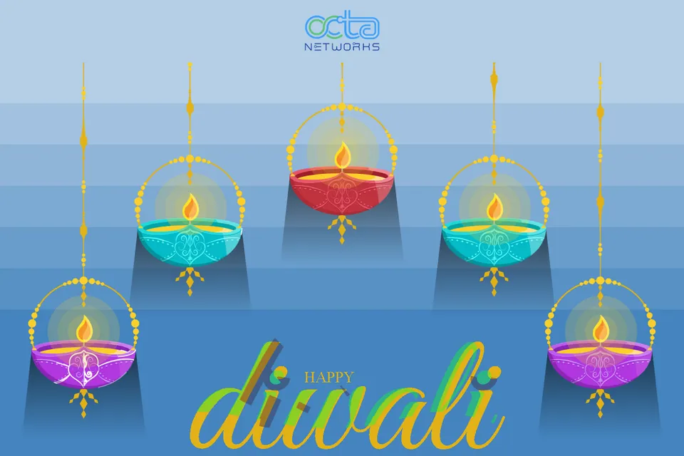
A seasonal campaign landing page designed and developed for Octa Networks' Diwali Sale 2023.
Seasonal campaign · Independent design and development · 2023

A festive campaign landing page designed and developed for an Octa Networks seasonal promotion.
Seasonal campaign · Independent design and development
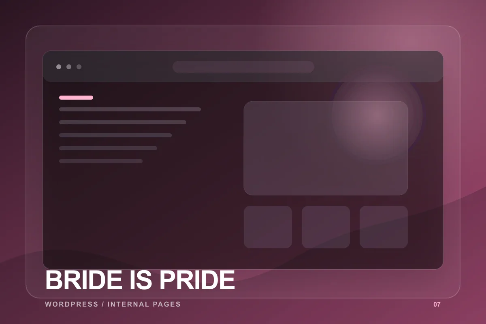
15 Archive visual · live snapshot unavailableArchived internal WordPress pages designed and developed as part of a wider wedding website experience.
Internal website pages · Internal page development
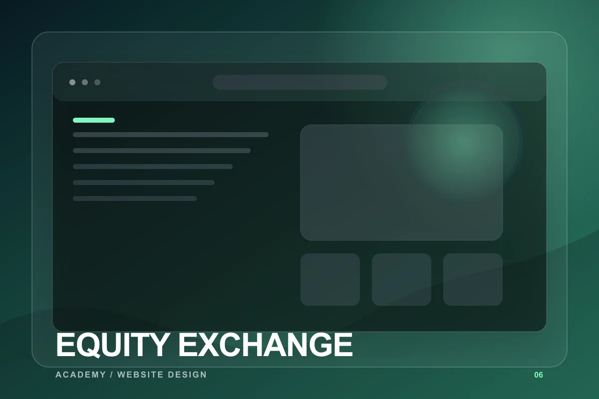
16 Archive visual · live snapshot unavailableAn archived financial education website designed and developed to present the academy online.
Academy website · Independent design and development
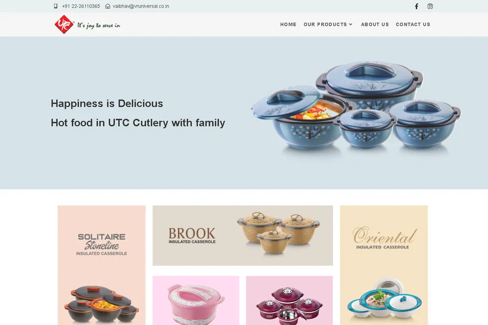
A WordPress product catalogue for UTC India's insulated ware and kitchen product ranges.
Product catalogue · WordPress build
No projects match those filters.
A Node.js web scraper fetched ecommerce product details and prepared them for bulk upload to another website — a resume-documented improvement to data acquisition, without an invented metric.
Read the case-study notes for documented scope, technical approach, constraints, and honest result language.
Read case studiesThis portfolio is grounded in the projects and experience listed on Umair's resume. Explore the live work, review the process, and request professional references during a conversation.
View verified work